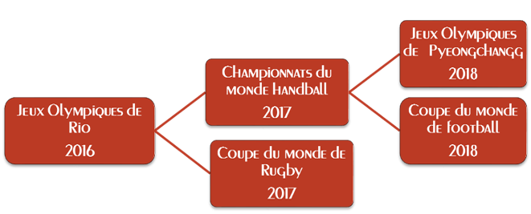

Soutenu par OSEO
Le besoin
Quel supporter n’a jamais séché sur l’un de ses sportifs préférés ? C’est arrivé à tout le monde au moins une fois, d’avoir oublié l’origine de tel ou tel sportif, son âge, son palmarès. Et après tout c’est normal, on ne peut pas tout retenir. Cependant, maîtriser ses faits est un enjeu capital pour tout supporter qui se respecte. C’est dans ce cadre qu’intervient LynxLabs, afin d’être le fidèle souffleur de tous les supporters sportif, quel que soit leur dévouement.
Notre positionnement
Chez soi, devant son téléviseur, il est très simple d’utiliser internet et un peu de temps afin compléter son capital d’informations. Mais que faire lorsque l’on est sur le terrain, en pleine action ? La place grandissante du sport dans nos sociétés implique un très grand nombre de spectateurs assistant à des évènements sportifs de grande envergure depuis les gradins, tribunes, abords de parcours, etc. C’est à ces spectateurs que nous nous adressons, afin de les aider à mieux vivre l'expérience sportive à laquelle ils assistent.
Et quel meilleur évènement que les Jeux Olympiques de Rio pour lancer notre service ? Avec 10 millions de visiteurs attendus, c’est l’occasion rêvée pour démontrer l’efficacité Rio’cognized. De plus, avec le support du comité olympique, et les retours de millions d’utilisateurs, les Jeux Olympiques de Rio constituent le point clé de notre lancement sur le marché.

Ce que Lynxlabs peut faire pour vous, entreprise
En tant que référence du sport, nous vous proposons d’utiliser notre application pour véhiculer l’image de votre société. Des créneau publicitaires peuvent être octroyés, dans un soucis de visibilité sur l’évènement, d’amélioration de l’image de marque, de confirmation de la marque comme partenaire sportif. Pendant les Jeux Olympiques de Rio et leurs 10 millions de visiteurs, Rio’cognized représente un moyen de communication efficace, en tant que canal individuel. Quoi de plus efficace que d’associer votre marque au sport préféré d’un utilisateur ? Que vous soyez un grand group international ou une entreprise locale de Rio, n’hésitez pas à nous contacter afin nous permettre de vous aider à véhiculer votre marque.